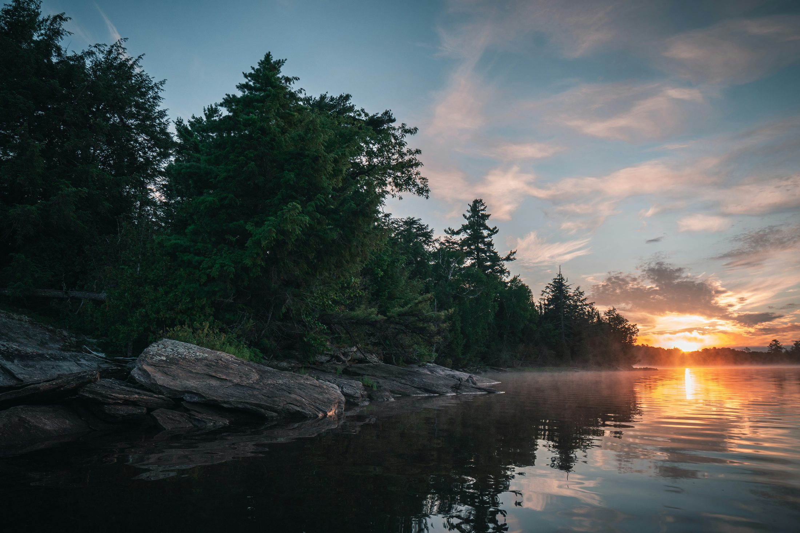
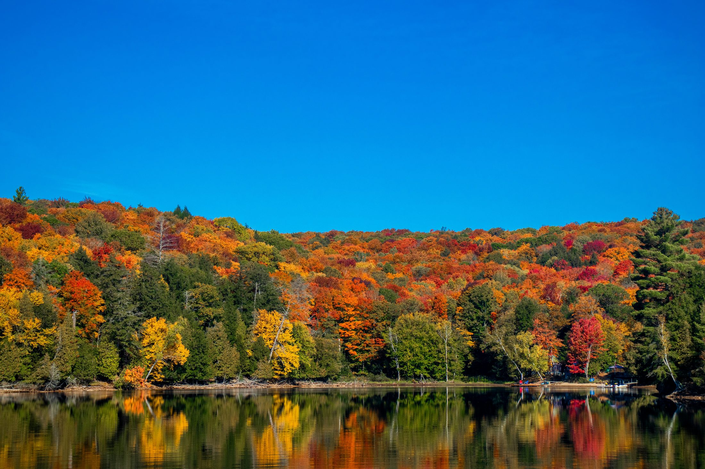
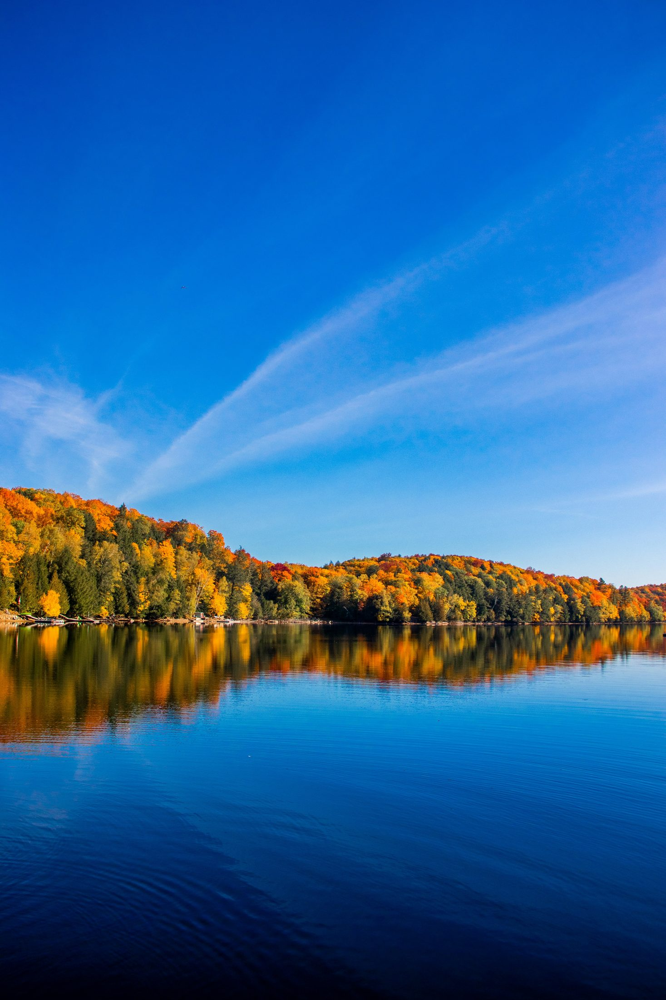
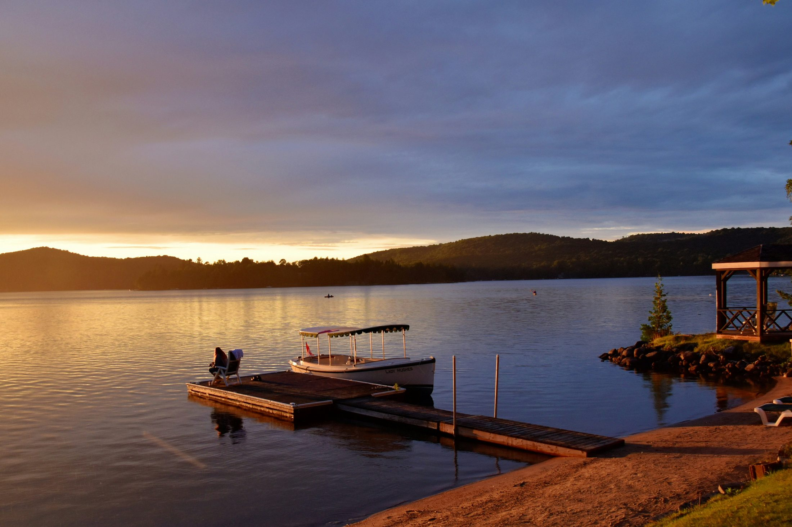
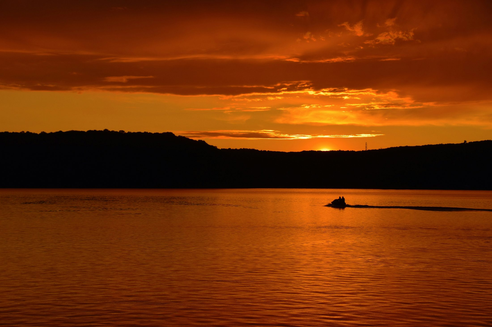

Quiet lakes, forest cabins, snowshoe trails, dogsledding, sculpture walks, and the slower, more intimate version of cottage country — perfect when the goal is to disappear into nature for a weekend.
I added Haliburton for the version of us that wants a quiet cabin, a lake, a slow morning, and nothing to prove.
| Season | Fit | Why |
|---|---|---|
| Summer | Great | Best for paddling, lakes, docks, and long evenings. |
| Fall | Excellent | Colour drives and quiet cottage-country romance. |
| Winter | Excellent | Cabin/fireplace/snowy forest energy; check road conditions. |
| Spring | Good | Peaceful but shoulder-season services can be limited. |
These are the shots to intentionally make while you are there — not just random photos from the parking lot.
Where: Your stay or nearest public waterfront
Best time: Morning
Shot idea: Coffee-on-dock photo; this is the Haliburton memory.
Where: Haliburton village lookout
Best time: Late afternoon
Shot idea: Wide view over forest and town.
Where: Public beach, dock, or quiet access point
Best time: Golden hour
Shot idea: Silhouette couple shot by the water.
This is better as an overnight/cabin trip than a rushed day trip.
Restaurants and cafés can have shorter off-season hours; check before leaving.
Winter is beautiful but requires careful driving and warm layers.
Add one favourite photo and one sentence here after you and Shreya visit. This turns the guide from a plan into a shared record.
Haliburton is the opposite of a busy resort weekend. It is for cabins, forests, snow, lakes, and unhurried time together.
It works especially well for Shreya’s first proper winter experience: snowshoeing, fireplaces, frozen lakes, hot drinks, and the feeling of being tucked away in Canada.
In summer and fall, it becomes a softer alternative to Muskoka: less polished, less crowded, more rustic, and often better value.
Book a small cabin or treehouse-style stay with fireplace or hot tub. The stay is the main experience.
An easy, unique walk through outdoor sculptures, with winter walking/snowshoeing and cross-country ski options depending on conditions.
A major wilderness-style experience area for hiking, paddling, canopy-style adventures, winter trails, and deep forest atmosphere.
For a truly Canadian winter memory, book one guided activity and keep the rest of the weekend slow.
Use Haliburton village / Minden as your practical base for coffee, groceries, and easy meals.





The most personal photos will likely be at the stay, not at a public attraction. Book for view, privacy, and firepit.
Great for casual walking photos because the art gives structure to the frame.
In winter, look for safe, public lakefront viewpoints — do not walk onto ice unless locally confirmed safe.
Best immediately after fresh snow, before trails get messy.
Simple, warm photos with coffee, winter coats, and local storefronts.
Drive north/east with one coffee stop. Avoid Friday evening if possible.
Use this for gas, coffee, washroom, and snacks.
Pick up groceries or easy vegetarian dinner supplies before checking in.
Let the stay do the work: fireplace, hot tub, forest walk, dinner in.
| Trip Style | Recommendation |
|---|---|
| Day trip | Possible if you keep it to one main town/experience. |
| 1 night | Best for a no-rush romantic version. |
| 2 nights | Best when the stay, weather, or activities are part of the experience. |
Use for practical summer/fall weekends where the destination matters more than the room.
Your sweet spot. Prioritize fireplace, hot tub, privacy, and short drive to town.
Worth it if it becomes the experience: forest view, wood stove, outdoor shower, sauna, or lakefront.
Save for anniversaries, first snow weekend, or a trip where you barely leave the property.
| Coffee | Plan around local cafés in Haliburton or Minden; verify winter hours. |
| Lunch | Keep it simple: soups, sandwiches, pizza, or café-style vegetarian meals. |
| Dinner | If the stay has a kitchen, cooking together may be more romantic than driving at night. |
| Dessert | Bring your own dessert/hot chocolate supplies for the cabin. |
| Vegetarian strategy | Remote Ontario towns can be limited. Check menus before arrival and keep easy vegetarian groceries in the car. |
Take the drive slowly; this is a weekend to decompress.
Eat before check-in or pick up groceries.
Settle in, unpack, make tea.
Forest/lake walk near the stay.
Cook or order simple food. Fireplace + movie night.
No alarm-clock travel.
Easy walk or snowshoe depending on season.
Coffee, small shops, groceries.
Hot tub / firepit / dinner in.
If clear, step outside away from lights.
Better as a separate trip, but the Highlands pair well with Algonquin-style forest energy.
Good practical stop for supplies and casual food.
A softer summer/fall extension on the way home.
Do not combine in one rushed weekend; choose one region at a time.
Planning sources used for this draft:
Destination Ontario — Haliburton Highlands
Haliburton Sculpture Forest — Winter
Photo source method: Wikimedia Commons / official tourism-style URLs are used as draft visible image references. Final public version should include full licence text where required.
Use this as the quick seasonal decision guide before choosing a date.
Best for long daylight and relaxed exploring.
Cooler weather, softer light, and better colours.
Fresh scenery but conditions can vary.
Only if access and road conditions are suitable.
A quick scan to decide whether this is the right kind of trip for the two of you.